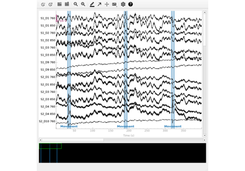
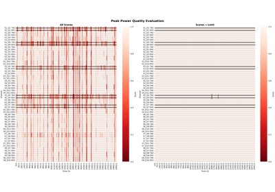

Analysis examples# Importing Data From fNIRS Devices Importing Data From fNIRS Devices Example Datasets Example Datasets Read Gowerlabs LUMO data Read Gowerlabs LUMO data GLM Analysis (Simulated) GLM Analysis (Simulated) GLM Analysis (Measured) GLM Analysis (Measured) Group Level GLM Analysis Group Level GLM Analysis GLM FIR Analysis GLM FIR Analysis GLM and Design Matrix Parameters GLM and Design Matrix Parameters Waveform Averaging Analysis Waveform Averaging Analysis Group Level Waveform Analysis Group Level Waveform Analysis SNIRF Support in MNE SNIRF Support in MNE Signal Enhancement Techniques Signal Enhancement Techniques  Artifact Correction Techniques Artifact Correction Techniques  Signal Quality Evaluation Signal Quality Evaluation Frequency and Filter Commentary Frequency and Filter Commentary Mayer Wave Parametrisation Mayer Wave Parametrisation Decoding Analysis Decoding Analysis Utilising Auxiliary Data Utilising Auxiliary Data Utilising Anatomical Information Utilising Anatomical Information Save and load GLM results Save and load GLM results Importance of Controls and Parameter Selection Importance of Controls and Parameter Selection